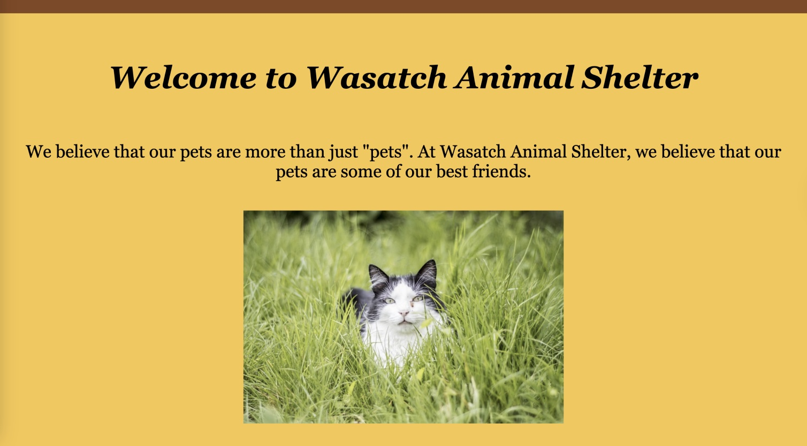
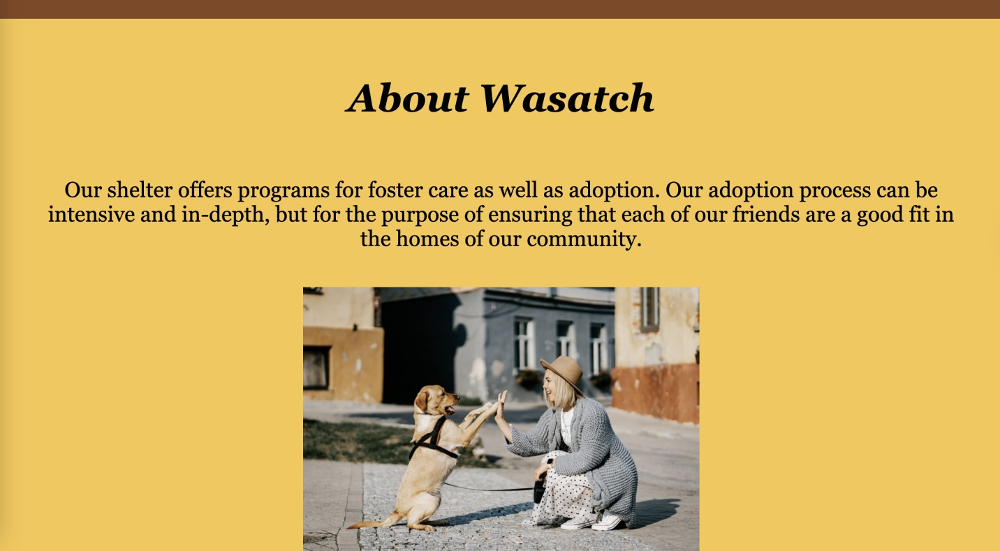

Wasatch Animal Shelter

Project Details
Wasatch Animal Shelter is a responsive website created to share information about animal adoption and foster programs in a clear and approachable way. The site includes a home page, about page, animals page with adoptable pets, and a contact page with hours and location. I designed and developed the site using HTML and CSS, focusing on clean layout and simple navigation.
Scope
The goal of this project was to build a user-friendly informational site that makes it easy for people to learn about the shelter and its services. Visitors can browse available pets, learn about the shelter’s mission, and find ways to get involved or contact the organization.
